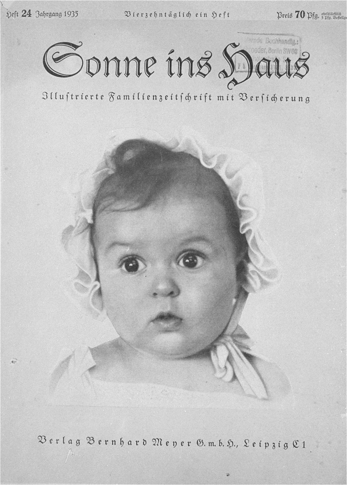

I Begat a Daughter, Rachel

upload.wikimedia.org
"She streatched out her legs, put the child down next to her, threw a pillow over him, and pressed down" (Meras 41).
If only they didn't take our Moishele to Paneriai, right David? Then we wouldn't have needed another son. But you wanted a son, didn't you? I'm not sure. You wanted a son, but not a son like this. And poor Liza is only eighteen, but she is ungrateful. She does not understand the beauty of having a child. Why does she say such rotten things, David? Why does she wish death upon her baby? David, why won't you respond? Why doesn't this baby look like us, David? Why aren't you here with me?
What is this child?
Where is my child?
The Nazis performed experiments on women, forcing them to give birth to child in an attempt to be able to breed the "perfect" Aryan child. The Lebensborn Program was eradicated in 1945, but the effects of the experiments remain.